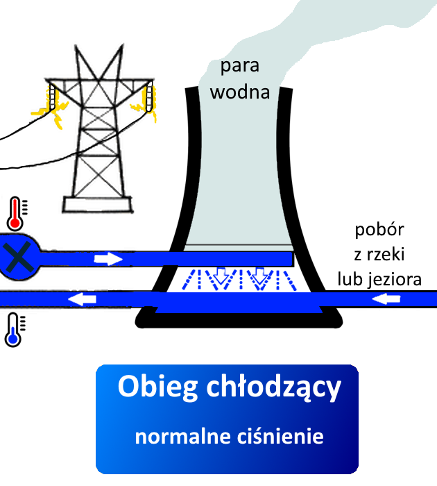

Jak działa elektrownia jądrowa?

Budowa elektrowni
Elektrownia jądrowa jest rodzajem elektrowni cieplnej, w której energia atomowa ulega przemianie w energię cieplną,
a następnie mechaniczną i elektryczną.
Podstawowe zasady działania elektrowni jądrowej są podobne do
elektrowni konwencjonalnych, jednak różnią się źródłem generowania ciepła. Elektrownia jądrowa wykorzystuje reakcje
rozszczepienia jąder wewnątrz reaktora, podczas gdy elektrownie konwencjonalne spalają paliwa kopalne.
Elektrownia jądrowa składa się z wielu elementów, które są niezbędne do wytwarzania energii elektrycznej.
Poniżej przedstawiony jest schemat reaktora wodno-ciśnieniowego (PWR) - najczęściej stosowanego na świecie. W tych reaktorach woda jest używana jako
chłodziwo i moderator neutronów. Można wyróżnić trzy obiegi wodne:
U.S.NRC., Public domain, via Wikimedia Commons


Woda w obiegu pierwotnym jest ogrzewana przez reaktor jądrowy, jednak nie wrze dzięki
wysokiemu ciśnieniu. Przekazuje ciepło w generatorze pary.
Woda w obiegu wtórnym pobiera ciepło w generatorze pary, gdzie wrze i
przekształca się w parę. Ta para napędza turbiny, które są połączone wałem do generatora, wytwarzającym prąd
elektryczny. Para przekształca się z powrotem w stan ciekły w skraplaczu.
Obieg chłodzący odbiera ciepło od skraplacza, a następnie oddaje je
w chłodnicach kominowych. Podczas tego procesu, około 1-2% masy wody odparowywuje w postaci pary wodnej. Cała uwolniona para nigdy nie ma kontaktu z radioaktywnością.

Jednym z najważniejszych elementów elektrowni jądrowej jest reaktor jądrowy, w którym zachodzi kontrolowana
reakcja rozszczepienia jąder ciężkich pierwiastków, zazwyczaj izotopu uranu 235. Generuje to ogromne ilości
energii termicznej. Reaktor jądrowy jest umieszczony
w specjalnym bloku reaktora, który wypełniony jest wodą, pełniącą funkcję chłodziwa i regulującą temperaturę
reaktora.
Wewnętrzna część reaktora zawiera pręty paliwowe, zwykle z wzbogaconym uranem 235, które są ułożone w specjalnym
układzie. Pod wpływem bombardowania neutronami, jądra uranu 235 ulegają rozszczepieniu, uwalniając energię w
postaci ciepła.
Myesd, CC BY-SA 4.0, via Wikimedia Commons

Rama, CC BY-SA 2.0 FR, via Wikimedia Commons
Zalety i wady
Niska emisja gazów cieplarnianych: Elektrownie jądrowe nie emitują dwutlenku węgla ani innych gazów
cieplarnianych do atmosfery podczas procesu wytwarzania energii elektrycznej.
Stabilność dostaw energii: Elektrownie jądrowe mogą działać nieprzerwanie przez długi okres czasu, nawet przez
kilkadziesiąt lat, bez konieczności częstego tankowania lub wymiany paliwa. Dlatego są w stanie zapewnić
stabilne i niezawodne źródło energii elektrycznej, które jest niezależne od fluktuacji cen surowców
energetycznych. Elektrownie jądrowe stanowią doskonałe uzupełnienie dla odnawialnych źródeł energii, które są
zależne od warunków atmosferycznych.
Wysoka wydajność energetyczna: Mała ilość paliwa jądrowego może wygenerować ogromne ilości energii elektrycznej
w porównaniu do tradycyjnych źródeł energii, takich jak paliwa kopalne. Z 1 grama uranu można uzyskać tyle samo
energii, ile z 3 ton węgla kamiennego.
Niskie koszty produkcji energii: Pomimo wysokich kosztów budowy elektrowni jądrowych, koszty eksploatacyjne są
stosunkowo niskie. Paliwo jądrowe jest względnie tanie, a elektrownie jądrowe mogą działać przez długi czas bez
potrzeby częstych przeglądów i konserwacji.
Problem składowania odpadów radioaktywnych: Reaktory jądrowe generują odpady radioaktywne, które wymagają
bezpiecznego składowania przez setki tysięcy lat. Bez odpowiednich środków ostrożności, odpady te mogą stanowić
zagrożenie dla środowiska i zdrowia ludzi.
Potencjalne ryzyko awarii i wycieków: Awarie w elektrowniach jądrowych mogą prowadzić do poważnych
konsekwencji, w tym wycieków promieniotwórczych i skażenia środowiska. Chociaż takie awarie są rzadkie, ich
skutki mogą być katastrofalne.
Wysokie koszty budowy i utrzymania: Elektrownie jądrowe są kosztowne w budowie i wymagają skomplikowanych
systemów bezpieczeństwa. Ponadto, koszty związane z rozbiórką starszych elektrowni i składowaniem odpadów są
znaczne.
Problemy związane z dostępem do surowców: Paliwo jądrowe, takie jak uran, jest ograniczonym zasobem naturalnym.
Dostęp do surowców może być trudny i kosztowny, zwłaszcza w przypadku krajów nieposiadających własnych zasobów
uranu.
Zagrożenie teroryzmem i wykorzystaniem technologii: Elektrownie jądrowe niosą ze sobą potencjalne zagrożenie
terroryzmem ze względu na charakterystykę swojej infrastruktury oraz obecność materiałów promieniotwórczych.
Istnieje również możliwość nadużycia infrastruktury elektrowni jądrowej w celu produkcji materiałów
wykorzystywanych do budowy broni nuklearnej.
Typy reaktorów
Oprócz reaktorów wodno-ciśnieniowych (PWR) istnieje kilka innych rodzajów reaktorów jądrowych, z których każdy ma swoje unikalne cechy.
Reaktory ciężkowodne (HWR) są stosunkowo nowym typem reaktora jądrowego. W tych reaktorach ciężka woda jest używana
jako chłodziwo i moderator neutronów. Ciężka woda jest podobna do zwykłej wody, ale zawiera więcej atomów deuteru,
co czyni ją lepszym moderator neutronów. Reaktory HWR mają wiele zalet, w tym niższe wymagania dotyczące paliwa i
wysoką efektywność wytwarzania energii.
Reaktory na paliwo MOX: Reaktory na paliwo MOX (Mixed Oxide) wykorzystują mieszankę tlenków uranu i plutonu jako paliwo. Ten rodzaj reaktora umożliwia wykorzystanie plutonu uzyskanego z zużytego paliwa jądrowego innych reaktorów. Reaktory MOX są formą recyklingu paliwa jądrowego i przyczyniają się do redukcji odpadów radioaktywnych.
Bezpieczeństwo
Podczas budowy elektrowni jądrowej muszą być uwzględnione różne zabezpieczenia, takie jak zabezpieczenia
przeciwwybuchowe, przeciwpożarowe, przeciwpowodziowe oraz systemy awaryjne i bezpieczeństwa. Elektrownia jądrowa
musi być zbudowana w taki sposób, aby była bezpieczna dla pracowników i dla środowiska naturalnego.
Wymagane zabezpieczenia obejmują m.in. systemy kontroli i monitoringu, które
umożliwiają ciągłą obserwację procesów i wykrywanie ewentualnych awarii, systemy chłodzenia, które zapobiegają
przegrzewaniu reaktora, a także środki ochrony przed skażeniami radiologicznymi, takie jak odpowiednie ekrany i
tarcze ochronne, mające chronić personel i środowisko przed promieniowaniem. Ponadto, ważnym elementem jest także
odpowiednie szkolenie personelu oraz wypracowanie procedur awaryjnych i planów ewakuacji w przypadku
nieprzewidzianych sytuacji.

Alan Levine
from Strawberry, United StatesRotated, cropped and restored by Bomazi., CC BY 2.0, via Wikimedia Commons
Zabezpieczenia przed wyciekiem promieniowania: elektrownia jądrowa musi być zaprojektowana w taki sposób, aby
zapobiegać wyciekom promieniowania poza jej granice. Muszą być stosowane skuteczne systemy kontroli i
monitorowania poziomu promieniowania, a personel musi być przeszkolony w zakresie postępowania w przypadku
awarii.
Systemy chłodzenia: reaktory jądrowe wymagają stałego chłodzenia, aby uniknąć przegrzania i uszkodzenia paliwa jądrowego. W przypadku awarii systemu chłodzenia, elektrownia musi mieć awaryjne systemy, które zapewnią chłodzenie reaktora, takie jak np. układ wstrzykiwania wody.
Zabezpieczenia przed pożarem: elektrownia musi być wyposażona w zaawansowane systemy przeciwpożarowe, które zapobiegną pożarom i ograniczą ich skutki, jeśli wystąpią. Muszą być stosowane odpowiednie materiały izolacyjne i odpornych na ogień, a obiekty muszą być zaprojektowane w sposób umożliwiający szybką ewakuację.
Zabezpieczenia przed włamaniem się osób niepowołanych: elektrownia musi być chroniona przed osobami niepowołanymi, które mogą uszkodzić lub przyczynić się do awarii systemów. Muszą być stosowane zaawansowane systemy monitorowania i ochrony, a personel musi być przeszkolony w zakresie bezpieczeństwa i postępowania w przypadku podejrzeń o włamanie lub sabotaż.
Przyszłość

Credits:
NASA
Elektrownie jądrowe mają potencjał, aby odegrać istotną rolę w przyszłości, zwłaszcza w kontekście eksploracji
kosmosu, takiej jak kolonizacja Księżyca. Ze względu na swoją wysoką gęstość energetyczną i możliwość długotrwałego
dostarczania energii, elektrownie jądrowe mogą zapewnić niezbędną moc dla zaawansowanych systemów i infrastruktury
na odległych planetach lub księżycach. Jednak oczywiście zastosowanie elektrowni jądrowych w kosmosie wymagałoby
zaangażowania w zaawansowane technologie oraz bezpieczeństwo transportu materiałów radioaktywnych.
>

{kind=link}
{kind=link}
{kind=link}
{kind=link}
{kind=link}